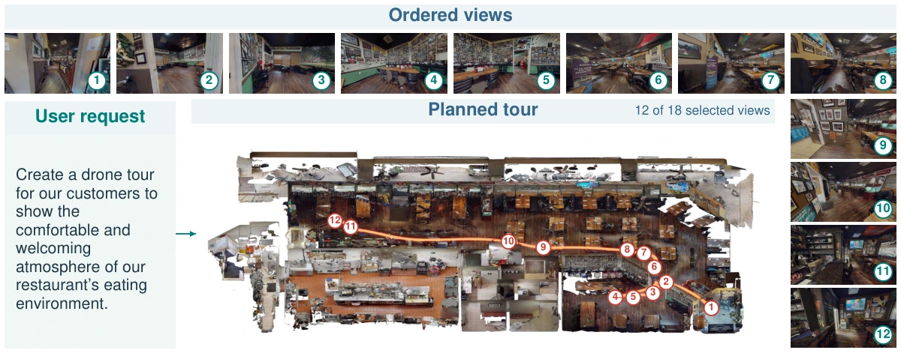

Agentic Aerial Cinematography
From Dialogue Cues to Cinematic Trajectories
An agentic framework that translates natural-language filming requests into scene-grounded viewpoints and executable drone trajectories, combining visual feedback with optimization and motion planning.
Equal-contributing author · Listed as George Z. Xue

Approach
Vision-language shot retrieval and ordering, preference-based Bayesian camera-pose refinement, and collision-aware, dynamics-constrained trajectory planning connect filming intent to onboard control.
Evaluation
Six simulated tours, a 41-participant user study, and hardware-in-the-loop flight tests. Prompt-alignment ratings range from 3.8 to 4.2 out of 5.
Scope
The framework assumes a static, mapped scene. Hardware-in-the-loop tests use a physical quadrotor, while cinematic views remain simulated; the study does not establish a comparative aesthetic advantage over human filming.